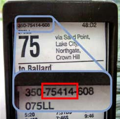

Stop Number
How do you know your stop number? It's a little tricky, but if your stop has a posted schedule, then it should have the stop number.
There is a series of three numbers, separated by dashes, in the upper-left corner of the schedule. The middle number is the stop number. The image below shows you were to look.
 
If your stop has a shelter, the stop number is also painted in the upper-left corner.
What if the schedule is missing?
All too frequently, the posted schedule is missing or the stop number is covered. What to do?
- The phone interface and iPhone interface both have tools for looking up stops by route number.
- You can also use the website to lookup stop numbers. Not really convenient if you are already standing at the stop.